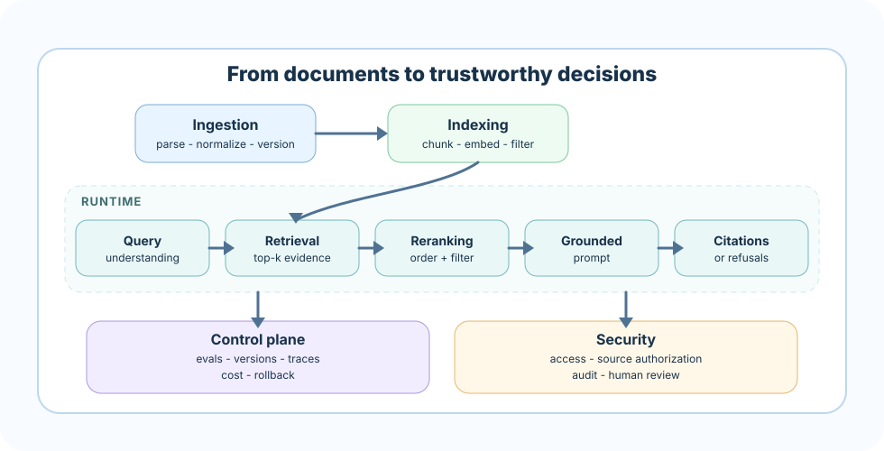

Repeated job
Name the user, trigger, input, expected output, and saved artifact. A saved artifact can be an audit note, runbook checklist, clause review, support draft, evidence board, or brief.
This final chapter turns the course into a portfolio-grade RAG product. The target is not a thin chatbot demo. The target is a durable workflow: a system with a clear user, trusted evidence, measurable quality, operational controls, and artifacts that make a reviewer want to open it twice.
Your finished project should answer five questions without hand waving: who revisits this product, what corpus does it trust, how does retrieval work, how do you know answers are grounded, and what happens when quality, cost, access, or freshness fails?
A production RAG capstone is a product decision before it is a model decision. The strongest projects choose a repeated knowledge workflow where users need evidence, not vibes: resolving a policy question, responding to an incident, comparing contract clauses, answering support tickets, or writing a research brief.
Name the user, trigger, input, expected output, and saved artifact. A saved artifact can be an audit note, runbook checklist, clause review, support draft, evidence board, or brief.
Define what the system may use, what it must refuse, and which answer types require human review. Production quality starts with explicit boundaries.
Write success criteria before building: retrieval recall, citation support, refusal accuracy, latency, cost per answer, and a demo path with happy, edge, and failure cases.
A written culinary test asks a cook to name sauces and knife cuts. The final practical exam asks something harder: run a live service. A guest with real dietary limits sits down, the clock is running, ingredients are what they are, and an examiner watches every decision. The cook is not judged on how many dishes they can recite, but on whether they can plate a real meal, on time, safely, and explain each choice when asked. That is the difference between a demo and a capstone.
Your production RAG capstone is that practical exam. The user is real, the corpus is your pantry, the evaluation gate is the examiner tasting the plate, and the failure modes are the moments a burner flares or an order comes back. You are not proving that you know every retrieval technique. You are proving that you can pick the right ones for one real workflow, run it end to end under constraints, and stand behind the result when someone probes it.
These three product shapes have high revisit value because they create durable work products, improve with feedback, and expose enough complexity to show production judgment.
User: employee, HR partner, compliance analyst. Workflow: ask a policy question, retrieve authorized policy sections, compare conflicts across versions, and produce a cited answer with an audit trail.
Production depth: role-based access, metadata by region/team/effective date, citation coverage, stale-policy warnings, escalation when policy language conflicts, and traceable answer review.
Revisit value: saved policy answers become auditable decisions and a feedback queue for confusing policies.
User: on-call engineer or incident commander. Workflow: describe a symptom, retrieve service runbooks and recent postmortems, rank by service/severity/freshness, and generate a step-by-step checklist.
Production depth: service catalog metadata, severity routing, freshness gates, source confidence, safety refusals for destructive actions, feedback capture, and post-incident evaluation.
Revisit value: every incident leaves a checklist, trace, and knowledge-gap note that improves the next response.
User: analyst, student, product researcher, or founder. Workflow: upload a corpus, ask comparative questions, build an evidence board, check claims, and export a cited brief.
Production depth: document parsing, source comparison, claim-level citations, contradiction detection, reusable boards, export templates, and answer support evaluation.
Revisit value: the board evolves from question answering into a living research workspace.
Choose one track and keep it narrow enough to finish end to end. Each track should deliver an MVP, hardening pass, evaluation gate, and portfolio package.
Steps: collect policy docs, model departments/regions/effective dates, build hybrid retrieval, add citation-required answers, detect conflicts, and log decisions.
Milestones: corpus card, metadata schema, retrieval baseline, grounded answer UI, access-control simulation, release report.
Gate: answers must cite current authorized policy text and refuse when user role or policy freshness is insufficient.
Steps: define service catalog, index runbooks/postmortems, route by service and severity, generate action checklists, and capture incident feedback.
Milestones: incident taxonomy, freshness-aware retriever, checklist generator, destructive-action refusal, post-incident eval packet.
Gate: top evidence must match service and severity, and risky actions must be labeled or deferred to human confirmation.
Steps: chunk agreements by clause, rank authority, compare clauses, identify missing terms, and route risky answers to review.
Milestones: clause schema, comparison view, citation matrix, risk flags, review queue export.
Gate: the system must distinguish retrieved language from legal advice and preserve clause provenance.
Steps: combine help center content and ticket patterns, retrieve by product/version/customer segment, draft answers, score knowledge gaps, and track deflection quality.
Milestones: answer templates, gap dashboard, feedback labels, cost budget, escalation rules.
Gate: responses must cite public or internal-approved sources and avoid inventing unsupported troubleshooting steps.
Steps: parse source documents, build evidence boards, compare claims, generate cited summaries, and export a briefing package.
Milestones: source library, claim table, contradiction report, brief exporter, reviewer notes.
Gate: claims in the brief must map to specific evidence snippets, and unsupported claims must be marked unresolved.
Use this roadmap to prevent the capstone from becoming a sprawling wishlist. The MVP proves one valuable loop. Hardening proves that you understand production pressure.
Milestone 1 - Product frame
Define user, repeated workflow, corpus, saved artifact, and demo questions.
Milestone 2 - Data foundation
Build corpus card, parser, metadata schema, chunk strategy, and index version.
Milestone 3 - Retrieval baseline
Implement lexical/vector or hybrid retrieval, reranking, filters, and citation snippets.
Milestone 4 - Answer loop
Generate grounded responses, refuse unsupported requests, and save user-facing artifacts.
Milestone 5 - Evaluation gate
Run retrieval, answer support, refusal, latency, and cost checks against a small gold set.
Milestone 6 - Operations gate
Add traces, quality dashboards, rollback notes, access/freshness checks, and release criteria.
Milestone 7 - Portfolio package
Ship README, architecture diagram, eval report, failure analysis, demo script, and roadmap.Your architecture diagram should prove that the system is more than prompt glue. Show the path from documents to decisions and make every trust boundary visible.

A serious capstone includes a small but meaningful evaluation suite. Ten excellent test cases beat one hundred vague ones. Mix common questions, edge cases, stale-source cases, contradictory evidence, and unsupported requests.
Measure whether the expected evidence appears in top-k results, whether metadata filters work, and whether reranking improves support for the final answer.
Check that each important claim is grounded in retrieved text. Penalize missing citations, citation drift, overbroad summaries, and invented details.
Test refusals for missing evidence, stale documents, unauthorized sources, legal/medical-style overreach, destructive incident actions, and conflicting sources.
Production RAG fails in ordinary ways: stale documents, bad chunks, weak filters, hidden cost growth, prompt drift, access mistakes, and silent quality regressions. Your capstone should show how you would notice and respond.
The portfolio package is what lets a reviewer understand your judgment without sitting beside you. It should show the product, the engineering, the evidence, and the next increment.
Final artifact checklist
README with setup, demo script, corpus card, architecture, eval results, and roadmap
Architecture diagram with data flow and trust boundaries
Evaluation report with metrics, examples, and failure analysis
Trace samples for happy, edge, and refusal paths
Product screenshots or CLI transcript
Security, privacy, cost, observability, and deployment notes
Backlog separating MVP, hardening, and future product betsA strong answer sounds like this: "I started with a product decision, not a model. I picked one repeated workflow - resolving a policy question for a compliance analyst - and named the user, trigger, and saved artifact. I set the trust boundary up front: the system only cites authorized, current policy text, and it refuses or escalates when the user's role or the document's freshness is insufficient. I wrote the eval gate before building - retrieval recall on a small gold set, citation support per claim, refusal accuracy, plus latency and cost per answer - and I block releases that regress against baseline. I planned for the ordinary failure modes: stale documents, weak filters, prompt drift, access mistakes, and silent quality regressions, each with a trace field and a rollback path. And I packaged it so a reviewer can judge me without me present: a README, an architecture diagram with trust boundaries, an evaluation report with failure analysis, and trace samples for happy, edge, and refusal paths. The portfolio is the proof of judgment, not a screenshot of a demo."
01-policy-rag-poc and real reference implementations in 04-multi-tenant-docs-copilot, 05-audit-grade-compliance-rag, 06-realtime-oncall-copilot, and chapter-28/project/tracks/ - study them, then build the one workflow you can stand behind end to end.The project builds a capstone planner that turns a track into a production backlog. Use it as a scaffold, then replace the sample corpus and goals with your own project decisions.
Before coding the full app, produce the planner output, review the gates, and remove any scope item that does not help the first end-to-end demo. The best capstone feels complete at a small scale and honest about what comes next.